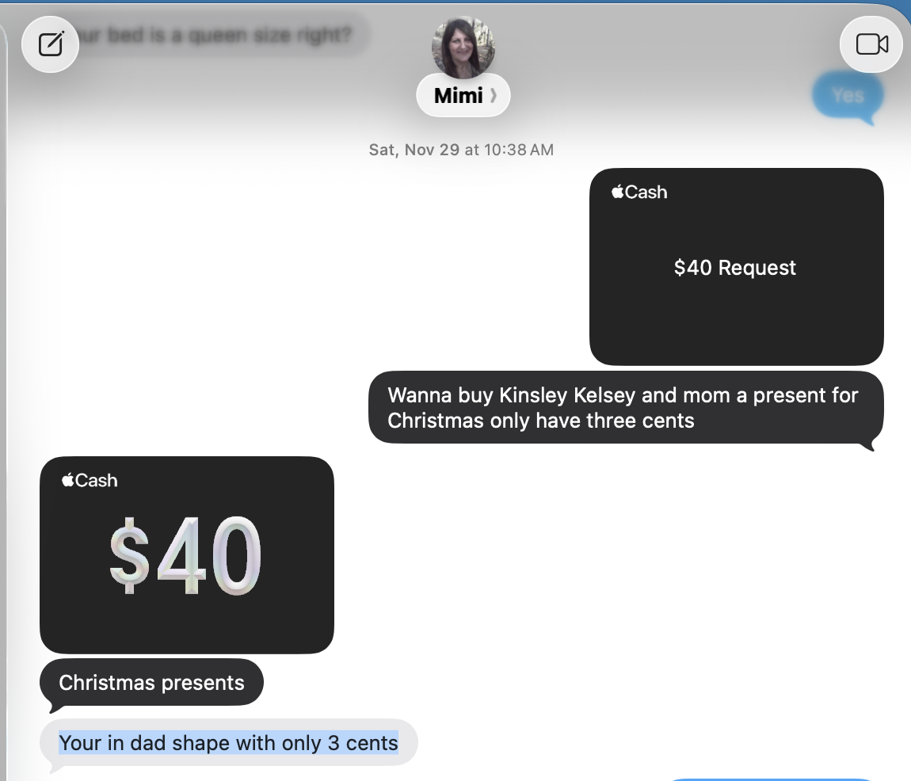
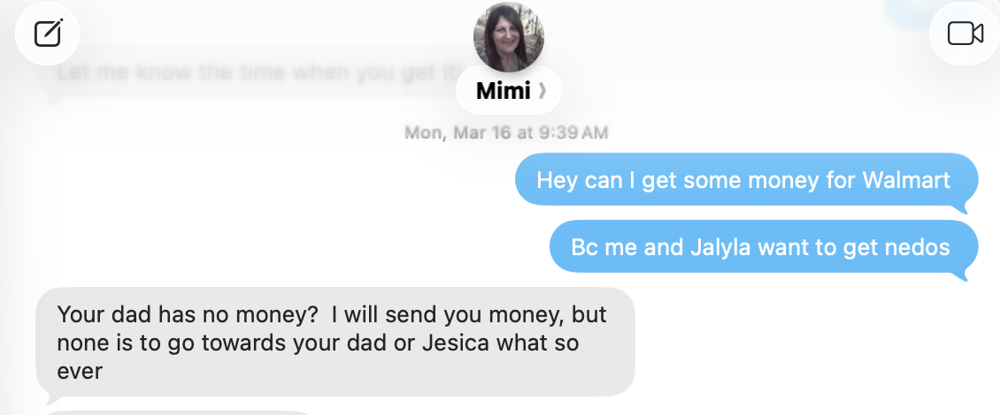
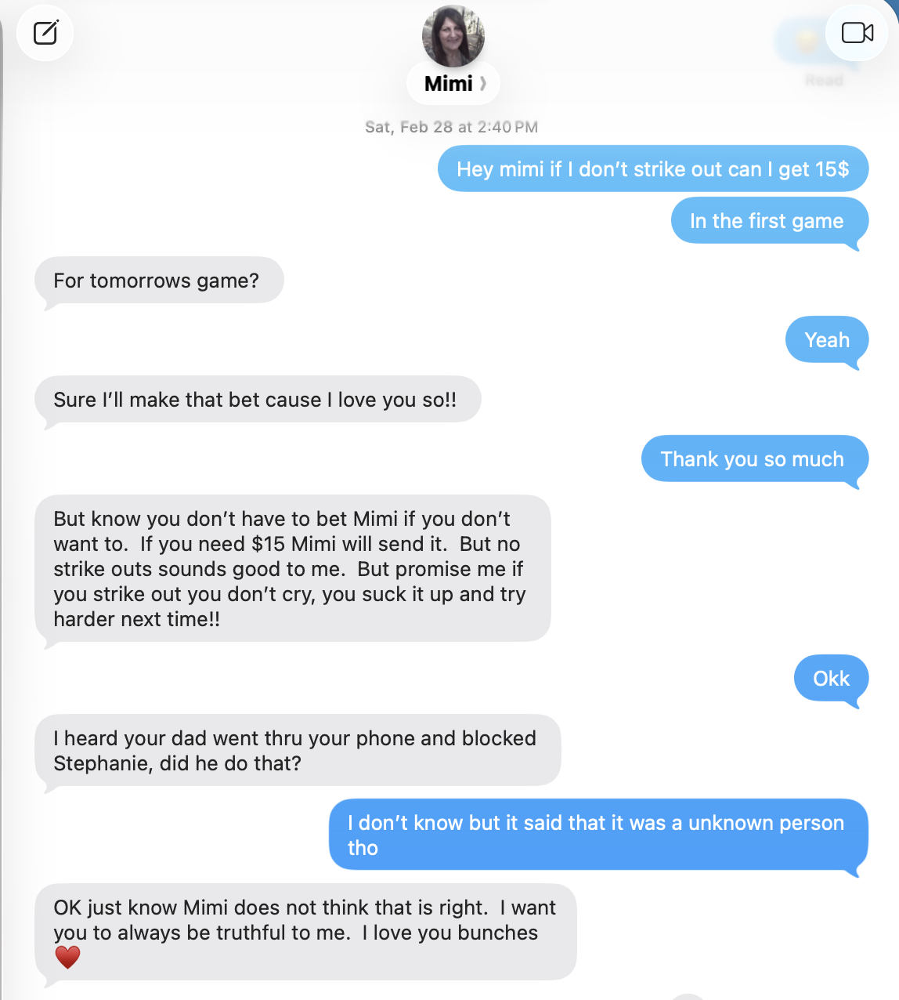
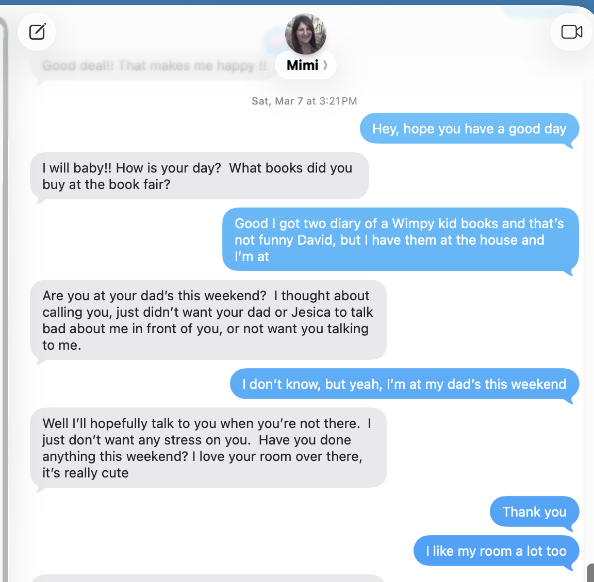
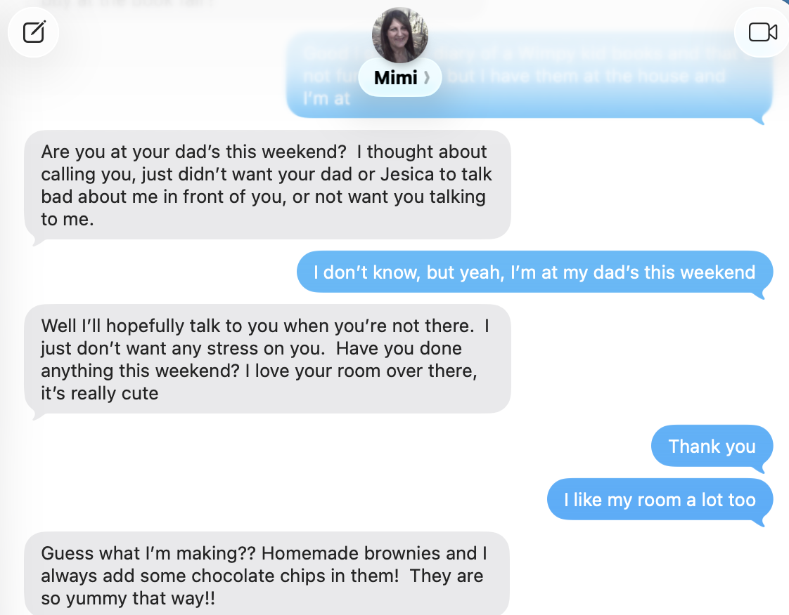

Childhood Caregiving and Family Narrative Timeline
Purpose: This section documents the reported timeline of primary caregiving, living arrangements, and the later dispute over who primarily raised Jeremiah.
- Grandparents adopted Jeremiah and are listed as parents on the birth certificate.
- Reported family background indicates Sharon left him with grandparents shortly after birth.
- Firm memory begins around 2nd grade, with grandparents as primary caregivers.
- 3rd grade included a period living in Dallas with Aunt Dana while Sharon lived separately in an apartment there.
- Jeremiah reports returning to grandparents after Dallas and living with them through most years before 7th grade.
- From 7th grade through 12th grade, he reports living with Sharon.
See also uploaded caregiving narrative summary.
Main Conflict Windows
May 23–25
Early boundary conflict during a high-stress period. Trigger appears tied to reduced contact, blocking, and Sharon reacting with hurt, criticism, and guilt framing.
July 26
Escalation tied to privacy, location, and triangulation. Sharon is described as pressing for personal information and bringing in Dana, Stephanie, Deanna, and Kinsley.
August 9–12
Strongest verbal escalation window. Reported pattern includes money conflict, rapid shift from concern to moral accusation, and shaming language.
September 18
Major narrative-control conflict. Warm discussion reportedly flips into direct challenge of Jeremiah’s account of who raised him.
September 24
Control-through-worry and money leverage. Support and gifts are described as being withdrawn after boundary pushback.
Observed Pattern Summary
Warmth flips into criticism
Normal family or child-related communication is described as sometimes shifting abruptly into blame, correction, or guilt when Sharon feels excluded or challenged.
Boundaries trigger escalation
Reported triggers include blocking, delayed responses, privacy around relationships, and reduced access to information.
Triangulation
Repeated references to Dana, Deanna, Stephanie, Kinsley, and the children generally are described as broadening conflict rather than keeping it contained.
Financial leverage
Money, gifts, and support are described as recurring pressure points that sometimes become conditional during conflict.
Exhibits: Language Used With 10-Year-Old Child
Purpose: This section preserves screenshot exhibits showing direct language used by Sharon ("Mimi") in text exchanges with my 10-year-old daughter. The concern reflected here is not simply that contact occurred, but that some of the language shown can be read as loyalty-framing, undermining of the father/household, and emotionally loaded positioning of the child between adults.
Observed themes reflected in these screenshots include:
- Statements referencing the father’s lack of money or resources in direct communication with the child.
- Language drawing distinctions between money for the child versus “your dad or Jesica.”
- Comments suggesting the child may not be allowed to speak freely when at the father’s home.
- Questions or remarks that can invite the child into adult conflict, divided loyalty, or negative assumptions about the father’s household.
- Use of gifts, money, treats, or emotional reassurance in the same conversation flow as comments about the father or household dynamics.
Analytical significance: In a child-centered review, these messages may be relevant because they show an adult using language with a young child that can blur the line between affection/support and adult conflict messaging. The concern is not ordinary grandparent warmth. The concern is whether the child is being subtly encouraged to view one household as unfair, withholding, or emotionally unsafe, or whether the child is being positioned to manage adult tensions that should remain outside the child’s role.
Exhibit A
Cash request / “Christmas presents” exchange including the statement: “Your in dad shape with only 3 cents.”

Exhibit B
Message stating: “Your dad has no money? I will send you money, but none is to go towards your dad or Jesica what so ever.”

Exhibit C
Conversation combining reward-based money talk with a follow-up statement questioning whether dad blocked Stephanie and telling the child “Mimi does not think that is right.”

Exhibit D
Message stating Sharon did not want to call because she did not want “your dad or Jesica to talk bad about me in front of you, or not want you talking to me.”

Exhibit E
Continuation of the same exchange showing praise, emotional framing, and household comparison themes in direct child communication.

Child-impact concern: When an adult repeatedly references money problems, adult disputes, blocked contacts, or alleged interference by a parent/stepparent in direct conversations with a 10-year-old, the child can be placed in a divided-loyalty position. Even where the speaker also expresses love or support, the overall effect may still be to pull the child into adult emotional narratives that are not developmentally appropriate for the child to manage.
Documentation note: These screenshots are best treated as exhibit material showing the exact wording used. Any final conclusion should be based on the complete communication record, but the language reflected here is significant enough to preserve separately for pattern analysis.
Triangle Model (Live)
This diagram shows how third-party involvement alters the structure of conflict.
Summary
Childhood Caregiving and Family Narrative Timeline
Timeline of Primary Caregiving, Living Arrangements, and Later Family Narrative Dispute
Purpose:
This timeline is intended to document my recollection of who primarily raised me during childhood, distinguish between firsthand memory and family-reported background, and clarify the basis for my statement that my grandparents were my primary caregivers during my early years.
Chronological Timeline
Infancy / Early Childhood
- My grandparents adopted me.
- My grandparents are listed as my parents on my birth certificate.
- Based on the adoption and family history, my understanding is that they became my legal and primary caregivers very early in my life.
- My aunt Dana recently told me that Sharon had me at age 18 and, shortly after I was born, left me with my grandparents, ran away from the house, and dropped out of high school.
- I identify Dana’s statement as family-reported background information, not as something I personally remember.
1st Grade
- I attempted to live with Sharon during this period.
- I remember attending three different schools during 1st grade.
- I went to New Braunfels during that year.
- I later returned and finished 1st grade at Abundant Life.
- My memory of 1st grade exists, but it is not as firm as my memory from 2nd grade forward.
2nd Grade
- I firmly remember living with my grandparents.
- I attended West Lawn.
- This is the point from which my memory becomes much clearer and more reliable.
3rd Grade
- I moved to Dallas and lived with my Aunt Dana.
- During that same period, Sharon lived in an apartment in Dallas.
- I remember visiting Sharon on occasion while living in Dallas.
- After this period, I returned to my grandparents’ home.
4th Grade
- I was back living with my grandparents.
- I attended Lake Road.
5th Grade
- I lived with my grandparents.
6th Grade
- I lived with my grandparents.
7th Grade 1/2
- I left my grandparents’ home and moved in with Sharon.
7th Grade through 12th Grade
- I lived with Sharon during this period.
Summary Conclusion
Based on:
- my grandparents’ adoption of me,
- the fact that they are listed as my parents on my birth certificate,
- my firm memory from 2nd grade forward, and
- the overall childhood timeline as I remember it,
it is accurate for me to state that my grandparents were the primary people who raised me during my early childhood and through most of my years before 7th grade, with limited interruptions.
Later Narrative Dispute / Ongoing Pattern
In adulthood, Sharon has disputed my account of my upbringing and appears to become upset when others hear my version that my grandparents primarily raised me. In my view, this has led to repeated attempts to challenge, minimize, or rewrite that history.
I have also experienced a broader pattern in which Sharon inserts herself into conflict involving me and others. Examples include:
- In 2018, she took Deanna’s side and helped pay for her divorce.
- She has threatened me in the past, including saying she would send the Texas Rangers after me.
- She has repeated stories from Stephanie without verifying whether they were true and passed them on to my aunt Dana.
- She has repeatedly claimed to have spoken with one of my children and reported that the child was distressed because of me, but I later learned that those conversations had not actually occurred.
- This has happened multiple times, including situations involving Kassidy.
- Because of this pattern, I have gone through extended periods of blocking Sharon to protect my peace and reduce unnecessary conflict.
Summary:
My grandparents adopted me and are listed as my parents on my birth certificate. I firmly remember from 2nd grade forward that they were the primary people raising me until I moved in with Sharon in 7th grade, with only limited interruptions such as a period in Dallas with Aunt Dana and an earlier attempt to live with Sharon during 1st grade. Sharon now disputes that history, but my account is supported by records, family background, and my own memory.